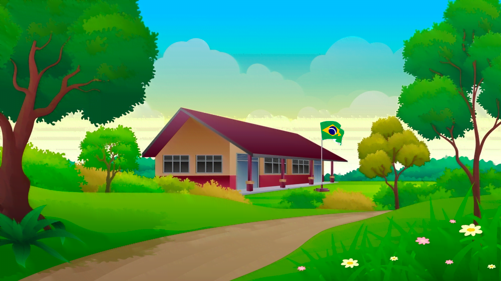

Introdução
A educação é um direito fundamental que deve ser acessível a todos, independentemente de onde vivem. No entanto, estudantes rurais enfrentam desafios únicos que muitas vezes dificultam a conclusão dos estudos. A distância das escolas, a falta de infraestrutura adequada, a necessidade de contribuir para a renda familiar e a escassez de recursos educacionais são apenas alguns dos obstáculos enfrentados por esses alunos. Estes fatores não só impactam o desempenho acadêmico, mas também influenciam a permanência desses estudantes no sistema educacional.

Desafios
- Distância e Transporte: Em muitas áreas rurais, as escolas estão localizadas a grandes distâncias das residências dos alunos. A falta de transporte público eficiente ou de veículos familiares pode tornar a viagem até a escola longa e exaustiva, resultando em altas taxas de absenteísmo e abandono escolar.
- Infraestrutura Deficiente: Escolas rurais frequentemente enfrentam problemas como falta de eletricidade, água potável, e instalações sanitárias adequadas. Além disso, a infraestrutura tecnológica, como acesso à internet, é muitas vezes inexistente, limitando o acesso a recursos educativos modernos.
- Falta de Recursos Educacionais:A escassez de livros, materiais didáticos e professores qualificados é um problema comum em áreas rurais. Essa falta de recursos impede que os alunos recebam uma educação de qualidade comparável à dos alunos urbanos.
- Pressões Econômicas e Sociais:Muitos estudantes rurais precisam trabalhar para ajudar no sustento da família, reduzindo o tempo e a energia que podem dedicar aos estudos. As expectativas culturais e sociais também podem priorizar o trabalho sobre a educação, especialmente para meninas.
Soluções
- Melhoria da Infraestrutura:Investimentos na construção e manutenção de escolas rurais com instalações adequadas são essenciais. Isso inclui garantir o acesso à eletricidade, água potável, saneamento básico e tecnologia.
- Transporte Escolar:Implementar programas de transporte escolar gratuito ou subsidiado pode reduzir significativamente as barreiras de acesso às escolas, garantindo que os alunos possam frequentar as aulas regularmente.
- Capacitação de Professores:Programas de formação e incentivos para professores trabalharem em áreas rurais podem melhorar a qualidade do ensino. A contratação de professores locais ou a oferta de habitação para professores de fora também pode ser uma solução.
- Recursos Educacionais e Tecnológicos:Fornecer livros, materiais didáticos e acesso à internet é crucial. Projetos de bibliotecas itinerantes e programas de doação de equipamentos tecnológicos podem fazer uma diferença significativa.
- Apoio Financeiro e Social:Bolsas de estudo, programas de assistência social e parcerias com organizações não governamentais podem aliviar a pressão econômica sobre as famílias, permitindo que os estudantes se concentrem nos estudos. Campanhas de conscientização sobre a importância da educação também são importantes para mudar as percepções culturais.
Conclusão
A conclusão dos estudos pelos estudantes rurais é um desafio complexo que exige uma abordagem multifacetada. Melhorar a infraestrutura escolar, garantir transporte adequado, fornecer recursos educacionais e tecnológicos, capacitar professores e oferecer apoio financeiro e social são medidas cruciais para enfrentar os obstáculos existentes. Somente através de um esforço conjunto entre governos, comunidade e organizações diversas será possível garantir que todos os estudantes, independentemente de sua localização, tenham a oportunidade de completar sua educação e alcançar seu pleno potencial.